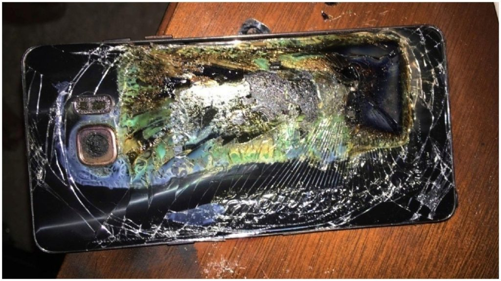

Por Quê os celulares explodem e como evitar
Já sei, você deve estar se perguntando por que os celulares explodem
e como evitar esse tipo de evento um tanto quanto desagradável,
acertei? hoje eu vou falar um pouco sobre por que isso acontece em
detalhes e também vou te dizer passo a passo como evitar para que
isso não aconteça.
Lêr mais
Celular Travando Muito Como Resolver!
A famosa pergunta, celular travando muito como resolver? É uma das
que mais chegam em todas as assistências do Brasil e do mundo. E por
isso hoje eu vou falar exatamente sobre o celular travando muito
como resolver e quais são as principais causas que levam a este
defeito. Por isso se você trabalha com
Lêr mais